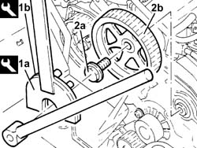

1032B40 TOOTHED DRIVEN PULLEY (one) - R.R. with timing belt removed
- Path
- Procedures > 10 ENGINE > 1032 timing system > 1032B BELT-DRIVEN TIMING SYSTEM > 1032B40 TOOTHED DRIVEN PULLEY (one) - R.R. with timing belt removed
- Kind
- repair procedure (removal / refitting; the operation number is the code)
- Applies to
- engines: 2.4 JTD 10V; all production periods
- Interactive page
- https://sloeber94.github.io/elrnDB-lThss/en/#/75718
Applies to: all engines; all production periods
 Removing
Removing
 Refitting
Refitting1. Stop the rotation of the pulley using the special tools (1a) and (1b).
 | Description | Code | Function |
|---|---|---|---|
1a | Support for counter-torque | 1.860.831.000 | Lock camshaft pulley |
| Description | Code | Function |
|---|---|---|---|
1b | Counter-torque | 1.860.831.001 | Lock camshaft pulley |
2. Undo the fixing bolt (2a) and remove the pulley (2b) from the housing in the camshaft.

Applies to: all engines; all production periods
Refitting
Removing- Position the pulley in the special housing on the camshaft.
- Tighten the fixing bolt and, using the special tool, stop the rotation of the pulley and tighten the bolt to torque.
| Description | Code | Function |
|---|---|---|---|
. | Support for counter-torque | 1.860.831.000 | Lock camshaft pulley |
| Description | Code | Function |
|---|---|---|---|
. | Counter-torque | 1.860.831.001 | Lock camshaft pulley |
 | Value - daNm | Fastening | Component | Ø |
|---|---|---|---|---|
. | (exhaust side) 12 | Bolt | TIMING DRIVEN PULLIES | M12 |